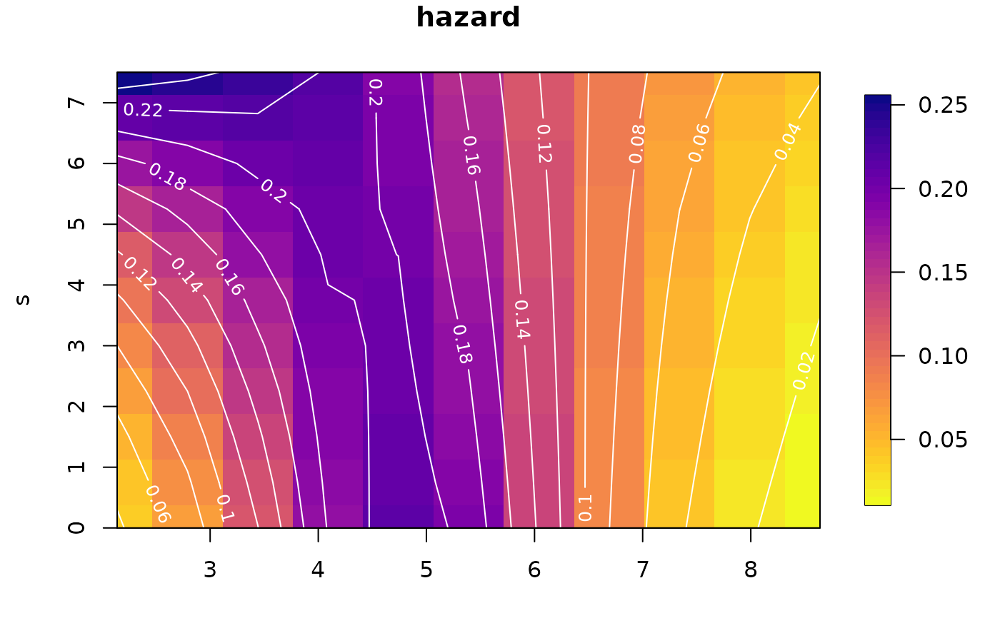
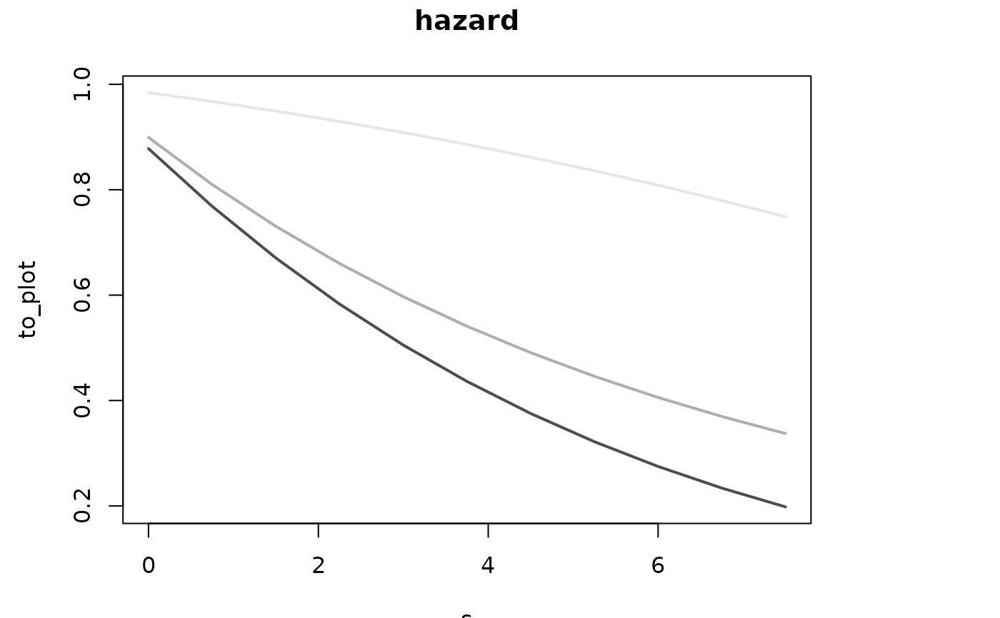

plot.haz2tsLMM() is the plot method for objects of class haz2tsLMM.
It produces plots of the fitted model with two time scales (see fit2ts()),
fitted via LMMsolver. The two-dimensional plots are limited to the transformed
plane, that is only plots over u and s axes are produced.
Arguments
- x
The output of the function
fit2ts. This is an object of class"haz2tsLMM".- plot_grid
A list containing the parameters to build a new finer grid of intervals over
uandsfor plotting. This must be of the form:plot_grid = list(c(umin, umax, du), c(smin, smax, ds)), whereumin,umaxandsmin,smaxare the minimum and maximum values desired for the intervals overuandsrespectively, anddu,dsare distances between intervals overuandsrespectively. Specifying a new denser grid is used to evaluate the B-spline bases used for estimation on such grid and plot the estimated surfaces with a greater level of details. If not specified, the plotting is done using the same B-splines bases as for the estimation. The function will check if the parameters for the grid provided by the user are compatible with those originally used to construct the B-splines for estimating the model. If not, the grid will be adjusted accordingly and a warning will be returned. While for objects of class 'haz2ts' this is an optional input, we strongly recommend to provide the plotting grid for object of class 'haz2tsLMM', given that evaluation of the B-splines works a bit differently in LMMsolver.- which_plot
The type of plot required. Can be one of
"hazard"(default),"covariates","SE","slices","survival"or"cumhaz"(see details section).- where_slices
A vector of values for the cutting points of the desired slices of the surface. If
which_plot == "slices", please provide this argument. Please also provide this argument in casewhich_plot = "survivalorwhich_plot = "cumhazandsurv_slices = TRUEorcumhaz_slices = TRUE, respectively.- direction
If
which_plot == "slices", indicates the direction for cutting the surface. Ifu, then the surface will be cut at the selected values ofu(indicated bywhere_slices), hence obtaining one-dimensional curves overs. Ifs, then the surface will be cut at the selected values ofs(indicated bywhere_slices), hence obtaining one-dimensional curves overu.- plot_options
A list with all possible options for any of the plots:
loghazardA Boolean. Default isFALSE. IfFALSEthe function returns a plot of the hazard surface, ifTRUEthe function returns a plot of the log-hazard surface.log10hazardA Boolean. Default isFALSE. IfTRUE, then a log10 hazard surface is plotted.cut_extrapolatedA Boolean. Default isTRUE. Cuts away the extrapolated area of the (log-)hazard surface before plotting.tmaxThe maximum value oftthat should be plotted.surv_slicesA Boolean. Default isFALSE. IfTRUEandwhich_plot == "survival", plot survival curves over the timesfor selected values ofu, that are cross-sections of the 2D survival surface.cumhaz_slicesA Boolean. Default isFALSE. IfTRUEandwhich_plot == "cumhaz", plot cumulative hazards curves over the timesfor selected values ofu, that are cross-sections of the 2D cumulative hazard surface.midpointsA Boolean. Default isFALSE. IfTRUE, the estimated quantities (hazard, survival, etc.) will be evaluated in the mid-points of the bins rather than at the extremes. Set toTRUEif plotting estimated number of events.col_paletteA function defining the color palette. The default palette isviridis::rev(plasma()). Specifying the color palette as a function allows for greater flexibility than passing the palette as a vector. We provide an example on how to create a function from any color palette below.n_shadesThe number of color shades to plot, default is 50.breaksThe vector of breaks for the color legend. Ifn_shadesis provided, this should be of lengthn_shades + 1.show_legendA Boolean. Default isTRUE. IfFALSEno legend will be plotted, useful for multi-panel figures with common legend. Works only for plots on rectangular grid (i.e. transformed (u,s) plane).mainThe title of the plot.xlabThe label of the first time axis (plotted on the x axis).ylabThe label of the second time axis (plotted on the y axis).xlimA vector with two elements defining the limits of the time scale on the x axis.ylimA vector with two elements defining the limits of the time scale on the y axis.contour_linesA Boolean. Default isFALSE. IfTRUEcontour lines are added to the surfaces.contour_colThe color for the contour lines. Default iswhite.contour_cexThe magnification to be used for the contour lines. Default is.8.contour_nlevThe number of contour levels desired. Default is 10.cex_mainThe magnification to be used for the main title, default is 1.2 .cex_labThe magnification to be used for the axis labels, default is 1 .HRA Boolean. IfTRUEthe HRs with their CIs will be plotted. Default isFALSE(plot thebetawith their CIs).symmetric_CIA Boolean. Default isTRUE. If a plot of the HRs is required (HR == TRUE), then plot symmetrical Confidence Intervals, based on the SEs for the HRs calculated by delta method. IfFALSE, then CIs are obtained by exponentiating the CIs for the betas.confidenceThe level of confidence for the CIs. Default is .95 (alpha = 0.05).col_betaThe color for the plot of the covariates' effects.pchThe symbol for plotting the point estimates.lwdThe line width.
- ...
Further arguments to image.plot or image
Details
The vignette "visualization" presents and discusses all the different
plotting options for the fitted model over two time scales.
In most of the cases, the user will want to visualize the hazard surface over
the two time scales. This can be plotted on the hazard scale, the log-hazard
scale or the log10-hazard scale, by switching to TRUE the corresponding
argument in plot_options.
The survival and cumulative hazard functions can be plotted as two-dimensional
surfaces over u and s or t and s. However, it is also very informative
to plot them as one-dimensional curves over s (cross-sections or slices).
This is done by selecting which_plot = "survival" and surv_slices = TRUE
in plot_options. Additionally, a vector of values for the cutting points
over the u-axis should be passed to the argument where_slices, together
with setting direction = u.
Similar plot is obtained for the cumulative hazard by selecting which_plot = "cumhaz",
cumhaz_slices = TRUE, see examples section.
Please, notice that for the survival function and the cumulative hazard, only
cross-sections of the surface for selected values of u (over the s time)
can be plotted.
The function obtainSmoothTrend from the R-package LMMsolver is
used here. We refer the interested readers to https://biometris.github.io/LMMsolver/
for more details on LMMsolver and its usage.
Examples
# Create some fake data - the bare minimum
id <- 1:20
u <- c(5.43, 3.25, 8.15, 5.53, 7.28, 6.61, 5.91, 4.94, 4.25, 3.86, 4.05, 6.86,
4.94, 4.46, 2.14, 7.56, 5.55, 7.60, 6.46, 4.96)
s <- c(0.44, 4.89, 0.92, 1.81, 2.02, 1.55, 3.16, 6.36, 0.66, 2.02, 1.22, 3.96,
7.07, 2.91, 3.38, 2.36, 1.74, 0.06, 5.76, 3.00)
ev <- c(1, 0, 0, 1, 0, 1, 0, 1, 1, 0, 1, 0, 0, 1, 0, 0, 0, 0, 0, 1)#'
fakedata <- as.data.frame(cbind(id, u, s, ev))
fakedata2ts <- prepare_data(u = fakedata$u,
s_out = fakedata$s,
ev = fakedata$ev,
ds = .5)
#> `s_in = NULL`. I will use `s_in = 0` for all observations.
#> `s_in = NULL`. I will use `s_in = 0` for all observations.
# Fit a fake model - not optimal smoothing
fakemod <- fit2ts(fakedata2ts,
optim_method = "LMMsolver")
# plot the hazard surface
plot(fakemod)

# plot the survival function as one-dimension curves over `s`
plot(fakemod,
which_plot = "survival",
direction = "u",
where_slices = c(4, 6, 8),
plot_options = list(
surv_slices = TRUE
))

# Create a color pallete function from a RColorBrewer palette, using the function
# colorRampPalette from grDevices.
if (FALSE) { # \dontrun{
mypal <- function(n) {
colorRampPalette(RColorBrewer::brewer.pal(9, "YlGnBu"))(n)
}
# if mod_haz is a fitted model of class `haz2ts`, the following code will
# produce a cross-sections plot of the hazard over `s` for selected values
# of `u`, with the palette specified above
plot(mod_haz,
which_plot = "slices",
where_slices = c(30, 60, 90, 180, 365, 1000, 2000),
direction = "u",
plot_options = list(
col_palette = mypal,
main = "Cross-sections of the hazard",
xlab = "Time since recurrence",
ylab = "Hazard"
)
)
} # }